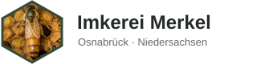
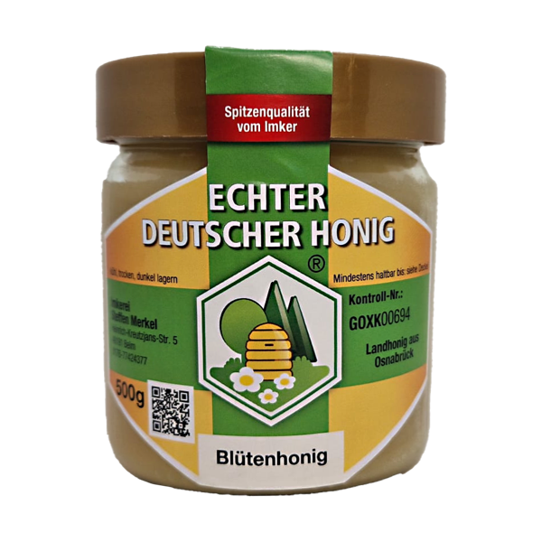
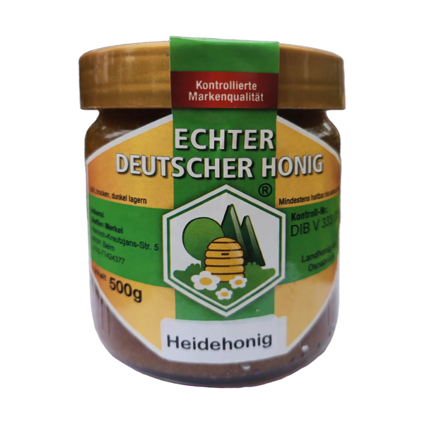
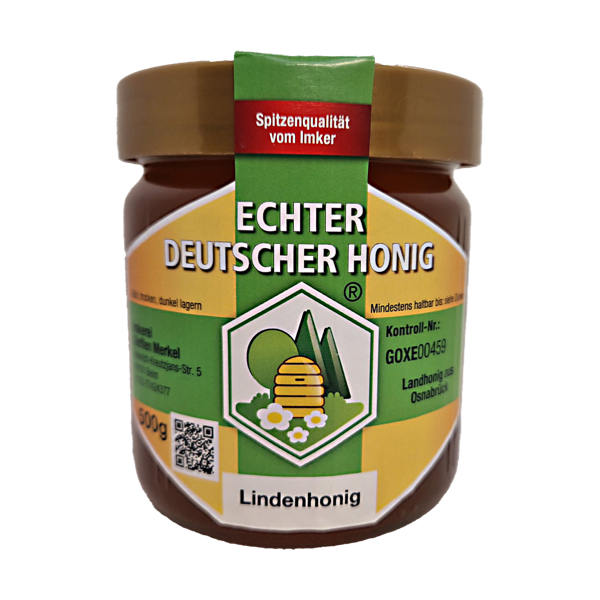
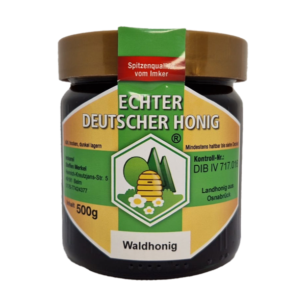
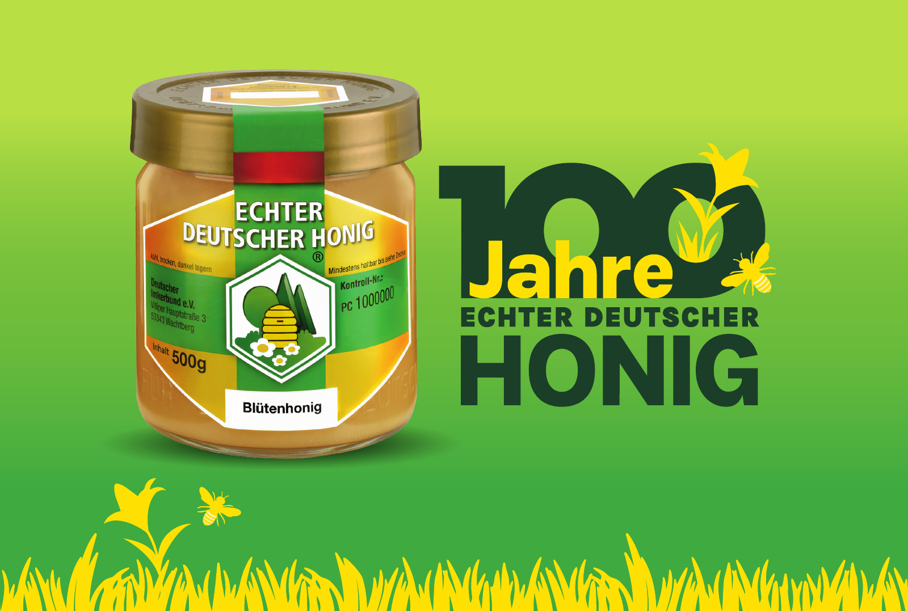

Rapshonig
Mild und fein im Aroma.
Kleefeldhof · Belm

Imkerei Merkel · Osnabrück
Acht Sorten, von Osnabrück bis in die Pfalz. Entdecken Sie die Ernteorte und den Geschmack unserer Honige.

Honig & Bienenprodukte
Alle Sorten auf einen Blick – mit Geschmack und Ernteort.
Mild und fein im Aroma.
Kleefeldhof · Belm

Mild und zart-blumig, feincremig gerührt.
Kleingärten am Bahndamm · Osnabrück

Blumig und aromatisch.
Kleingärten am Bahndamm · Osnabrück

Kräftig, malzig und aromatisch.
Lüneburger Heide · Niedersachsen

Aromatisch mit einer markanten Linden-Note.
Wasserschloss Schelenburg · Schledehausen

Mild, fein süß und zurückhaltend.
Sachsen · bei Leipzig

Dunkel und kräftig, würzig bis malzig.
Schwarzwald · Oberndorf am Neckar

Kräftig-herb mit leicht bitterer Note.
Burg Landeck · Klingenmünster · Rheinland-Pfalz

Honig direkt in der Wabe.

Blütenpollen aus dem Bienenstock.
Sortiment und Preise können sich ändern. Geschmacksprofile und Ernte variieren je nach Jahrgang.
Die Imkerei
Steffen Merkel ist Mitglied im Landesverband der Imker Weser-Ems e.V. Das steht für seine Einbindung in die organisierte Imkerei der Region. Der Honig wird im Glas mit dem Warenzeichen „Echter Deutscher Honig“ des Deutschen Imkerbundes angeboten.
In der Neuen Osnabrücker ZeitungHonig und Waben jetzt in Belm aus dem AutomatenArtikel bei noz.de ansehen ↗
Mitglied im Landesverband der Imker Weser-Ems e.V.
Honig mit dem Warenzeichen „Echter Deutscher Honig“
Deutscher Imkerbund
Das Jubiläumsmotiv zum Warenzeichen „Echter Deutscher Honig“ – auf einem Glas Blütenhonig aus dem Sortiment.

Direkt vor Ort
Honig und Bienenprodukte gibt es an zwei Standorten. Der Automat in Belm wurde auch in der Neuen Osnabrücker Zeitung vorgestellt.
Zum NOZ-Artikel über den Automaten in Belm ↗Kontakt
Fragen zu Honig und Produkten? Rufen Sie Steffen Merkel an.
0176 / 77 42 43 77 ↗